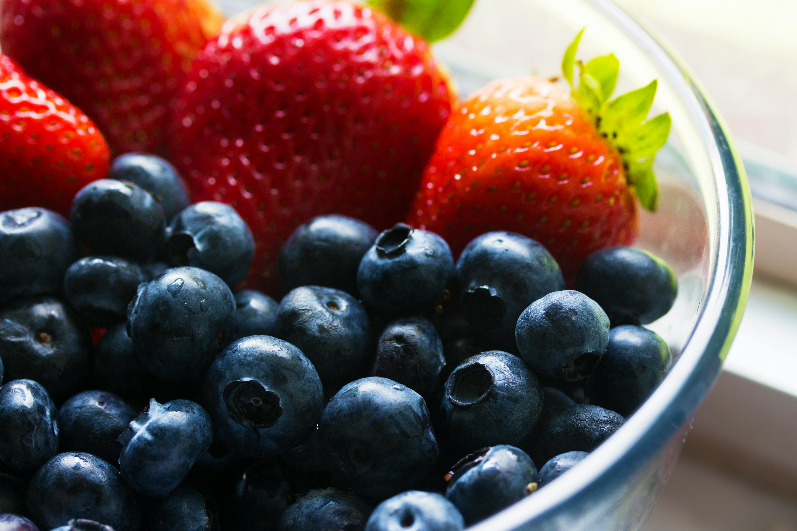

Recetario
Veganas
Ensalada de frutas

INGREDIENTES
*1 bolsa de 200 g Crema de Leche Alquería
*2 bananos
*1 papaya
*20 fresas
*1 melón
*5 cerezas
*3 manzanas
*2 peras
*¼ glaseado de fresa
*2 bolas de helado
*¼ queso
Preparación:
- En un recipiente grande, vierte la Crema de Leche Alquería y bátela ligeramente para que quede más
cremosa.
- Pela y corta los bananos, la papaya, el melón, las manzanas y las peras en trozos pequeños y agrégalos
al recipiente con la crema de leche.
- Lava y corta las fresas por la mitad, y agrégalas al recipiente.
- Agrega las cerezas enteras y mezcla suavemente todos los ingredientes para que queden bien
distribuidos.
- Refrigera la ensalada de frutas durante al menos 1 hora para que se enfríe y los sabores se
mezclen.
- Antes de servir, decora la ensalada con el glaseado de fresa, las bolas de helado y el queso
rallado.
- Sirve y disfruta de esta refrescante ensalada de frutas como postre o como un plato ligero y
saludable.